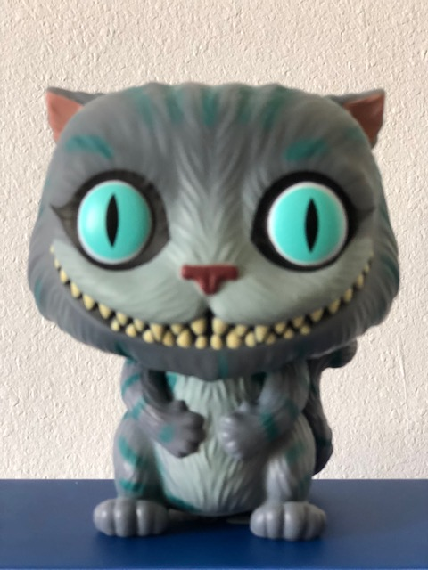

I used to work as a Travel Advisor, specialist of Northeast of China from 2017 to 2020. However, in December 2020, I lost my
job because of Covid. Rather than wait for the tourism to get back to normal, I decided to change career.
I was already very interested by WordPress but I wanted to be able to put some code into WordPress, so I
started to learn about Web Development in February 2021 with HTML and CSS first, then with JavaScript and
PHP. I learned a bit about Git, GitHib, Bootstrap, etc. From July 2021 to December 2021, I went into Web
Development in depth with a code school by learning HTML, CSS, JavaScript, PHP, Git, GitHub, Bootstrap,
Bullma, WorpdPress, MVC, OOP, PDO, SASS, VueJs, and a lot lot more. It was very intense and I wasn't able to
understand and remember evrything, so after some months to practice and learn by myself, I took a pro
membership with codecademy and enrolled for the Full-Stack Engineer career path! This Portfolio website is
part of of the projects codecademy make me to do. Next below some projects I did since February 2020.
I enrolled the Full-Stack Engineer path because I want to be able to review what I learn in code school at
my paces, but since I started to learn to code, I can see my preference is Front-end. I love to work with
WordPress and PHP, but I really enjoy to play with CSS. And even if I have some difficulties, it is a great
pleasure to work with JavaScript. So I might decide to enroll the Frontend path if I have enough with the
back when I will be there.
